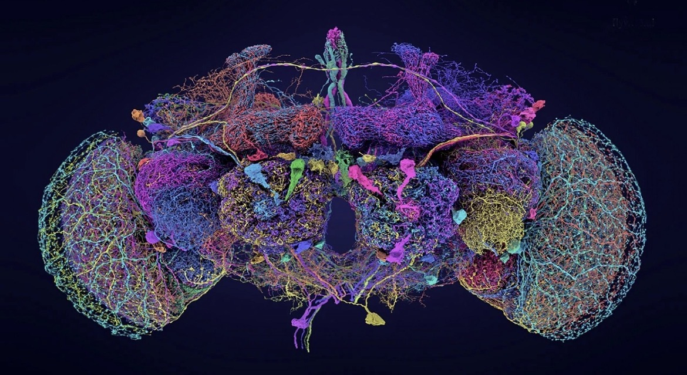

01 / ACTIVE RESEARCH · ONGOING
GITHUB ↗

Connectome-to-Behavior: Closed-Loop Drosophila Emulation
Closed-loop simulation coupling complete Drosophila connectomes (FlyWire, BANC) with Brian2 point-neuron dynamics and an embodied biomechanical body (MuJoCo, flygym) to evaluate emergent locomotion, grooming, and feeding without hand-coded motor rules.
IN PLAIN LANGUAGE
Take the full wiring diagram of a fruit fly's brain, switch it on inside a computer, give it a virtual body, and see whether it walks, cleans itself and feeds organically.